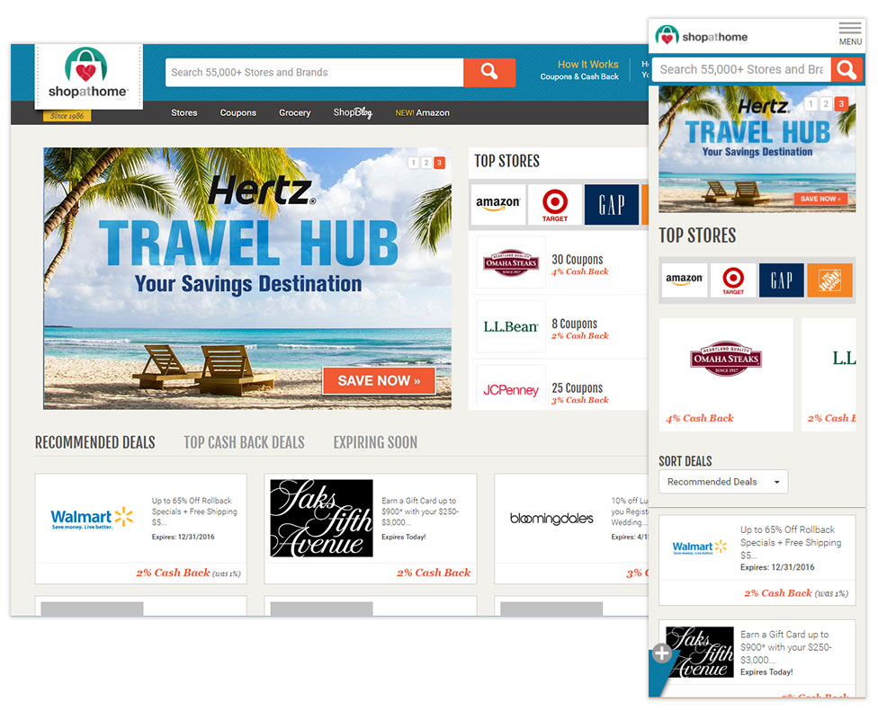
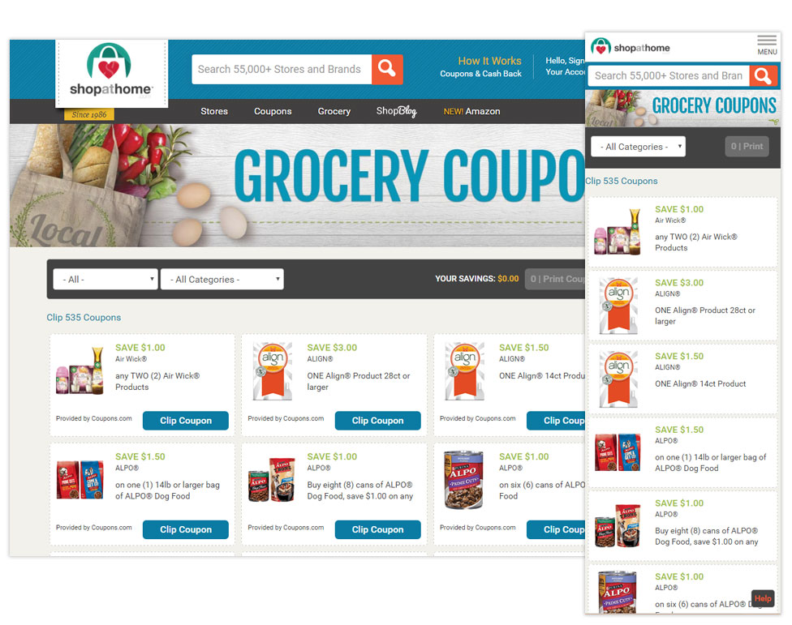
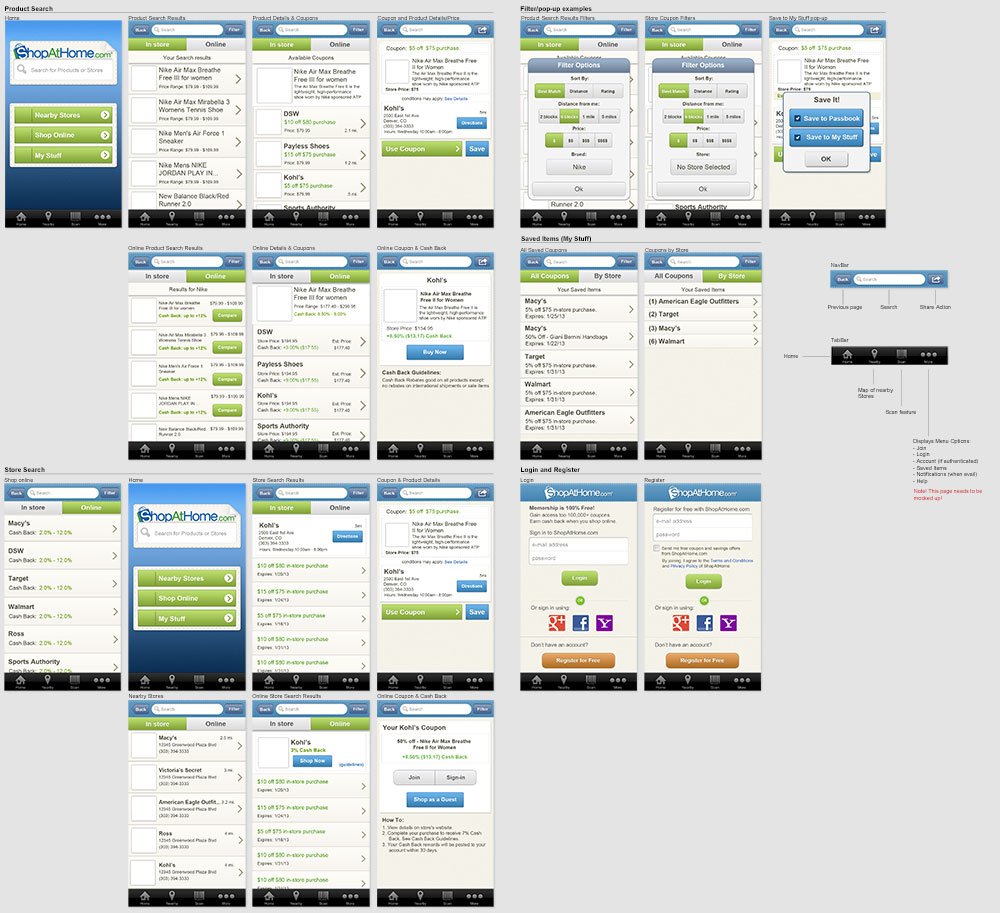
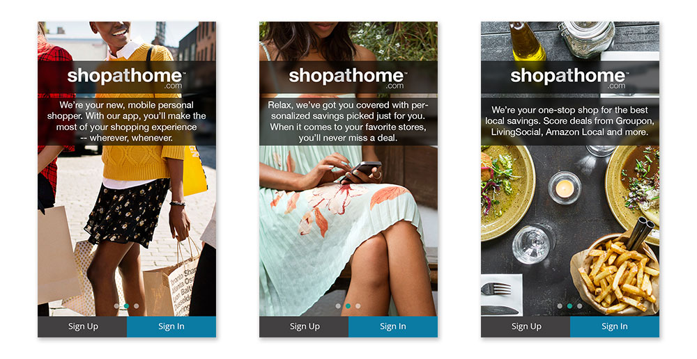
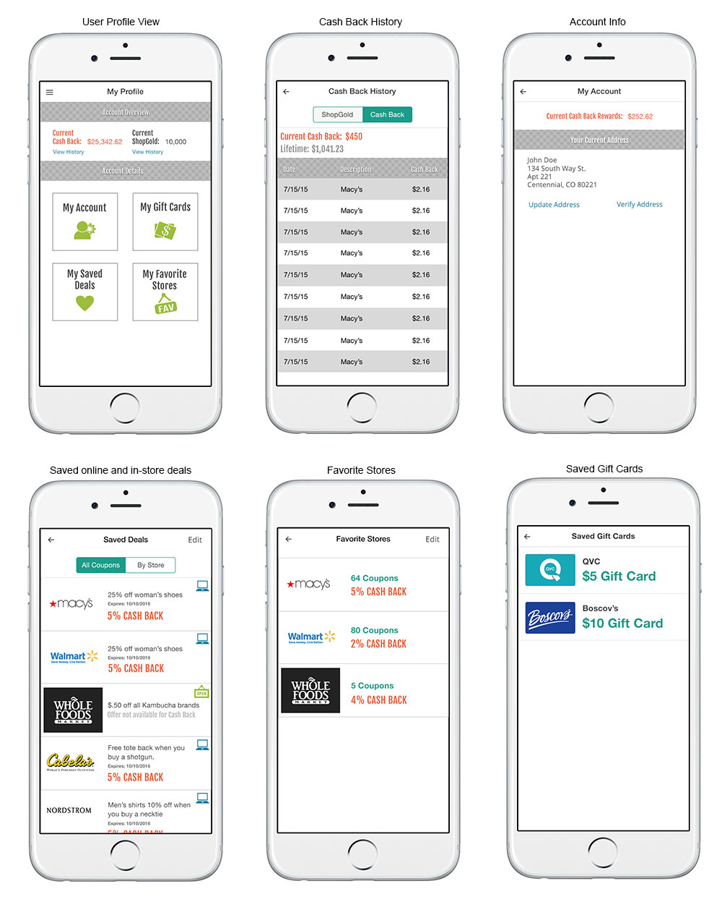

Latest work
eFinancialCareers
- eFinancialCareers.com - Responsive Redesign
- Style Guide - Creation and Development
This project involved working very closely with UX research to incorporate user feedback from user testing, interviews, and heuristic evaluations in order to build a responsive website that catered to three different personas through a content-driven CMS framework. The Content Consumer, Job Seeker, and Unknown User. Based on user's interactions, the page alters the content to show more relevant information at the top. I defined the style guide and worked closely with Project Managers, Stakeholders, and Marketing, designing wireframes, prototypes, and visual design that resulted in a website that is accessible on any platform and engaged users according to their specific needs and interests.
eFinancialCareer iOS App
- iOS Prototype User Flow
- eFinancialCareers: Jobs & News - UI/UX Design
The eFinancialCareers iOS app went through a number of iterations, user testing, stakeholder interviews, wireframes and flows before launching the final redesign. The UI was greatly simplified to provide a clean, simple user experience that adhered well to Apple HIG Standards while also clearly representing the eFinancialCareers brand and focusing on the core functionality and needs of job seekers in the Finance Industry.
Old stuff
ShopAtHome.com - Site (Since redesigned in 2017)
Spearheaded the planning and coordination of responsive implementation including an entire site redesign. Bootstrap was chosen as the front-end framework in an effort to expedite the process. The home page, store page, and grocery page, as well as the header/primary navigation are just several examples of work I developed. Technologies used included: HTML5, CSS3, Less, Sass, javascript, and jQuery.
Home Page
Store Page

Grocery Page
ShopAtHome.com - Mobile App
I worked closely with iOS and Android developers to build the first mobile app for ShopAtHome.com, from the initial concept through final product on iTunes and Google Play app stores. An intimate knowledge of the Apple HIG and Android Design Guidelines was necessary to adhere to user-centered design patterns for both platforms. Initial concepts, wireframes, and flowmaps were created to chart the user experience through the app and provide a simple, clean, usable interface that was forgiving and intuitive.
User Flows and Concepts (PDF):
Search Store Flowmap Search Product Flowmap Cash Back History Concepts My Stuff Concepts My Stuff Flowmap Scan Flowmap
Initial v1.0 Design Concepts
Initial v1.0 Asset Guide

Welcome Gate (v2)
User Profile Designs (v2)
In Store Flow Designs (v2)